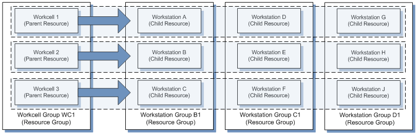

工作单元、工作站和组是可选的资源和资源组定义，可用于进一步细化物理模型。这些可选定义促成了两种重要机制：
| • | 可将任务列表指派给特定工作站，无需“移动”事务即可在该工作站进行处理。 |
| • | 可精确跟踪跨设备的批次数量移动情况。 |
此图表展示了工作单元、工作站、工作单元组和工作站组之间的关系。
| • | 工作站将工作单元分成多个站点。 |
| • | 工作单元始终是属于它的工作站的父级。 |
| • | 工作站仅应属于一个工作单元。 |
| • | 工作站组中的工作站应分配给不同的工作单元。 |
| 注释: | 记住，工作单元和工作站的准备是可选的，确保其适应您的需求，这是您所在企业的责任。 |

下表描述了跨工作单元和工作站的车间事务的行为。
|
事务 |
行为 |
|
拆分 |
如果工作单元或工作站需要容器清理，则禁止执行“拆分”事务。如果所拆分的批次中有部分批次未完成，拆分后得到的批次具有相同的已完成任务列表。 |
|
组合 |
与另一容器组合的任何或所有容器都具有目标容器的已完成任务、工作单元和工作站属性。 |
|
关联 |
关联容器时，会清除来源容器的已完成任务、工作单元和工作站。清除子批次的所有已完成任务。 |
|
分离 |
如果工作单元或工作站需要行清理，则禁止在批次上执行“分离”事务。如果不需要生产线清理，则导致取消关联的子容器将保留父容器的已完成任务的列表。 |
|
停工 |
“停工”事务不会影响工作单元或工作站的行清理。 |
|
释放 |
“释放”事务不会影响工作单元或工作站的行清理。 |
|
移动 |
执行“移动”事务后，与上一个工步的规范相关的电子流程将不再可用。 |